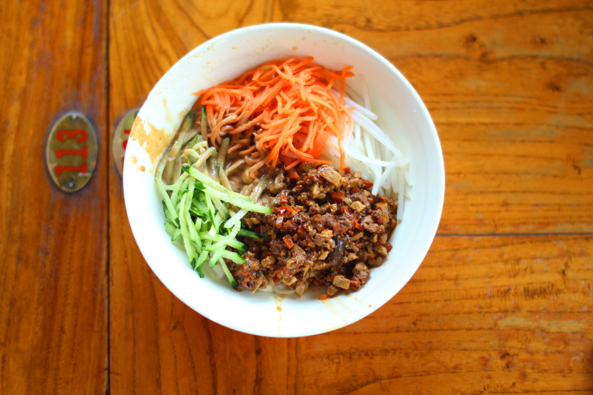

Zha Jiang Mian (Chinese Bolognese)

Description
"Zha jiang mian" is a traditional noodle dish from China.
The name translates to "stir-fried sauce noodles". It is
a very simple recipe if you have the right sauces on hand,
and the combination with fresh vegetables makes it a
great dish for any day of the year.
Ingredients
- 6 oz. ground pork (170g)
- ¼ teaspoon salt
- 1 teaspoon cornstarch
- ½ teaspoon oil (plus 1 tablespoon)
- 1/8 teaspoon white pepper
- 1 oz. pork fat (finely minced; optional)
- 3 slices ginger (minced finely)
- 4 cloves garlic (minced)
- 6 fresh shiitake mushrooms (finely chopped)
- 2 tablespoons sweet bean sauce
- 3 tablespoons ground bean sauce
- 1 tablespoon dark soy sauce
- 1 cup water
- 8 oz. dried wheat noodles (or 1 pound fresh wheat noodles)
- 1 cup carrots (julienned)
- 1 cup cucumbers (julienned)
- ½ cup scallions (julienned)
Steps
- Marinate the pork with the following for 15 minutes: ¼ teaspoon salt, 1 teaspoon cornstarch, ½ teaspoon oil, 1/8 teaspoon white pepper.
- Heat a tablespoon oil in your wok over medium heat and add the pork fat (if using). Cook for 1 minute to render the fat down, and add the marinated ground pork to the wok. Cook for a minute to brown it, and then add the ginger, garlic, and mushrooms. Stir fry everything together for another 2-3 minutes.
- Add the sweet bean sauce, ground bean sauce, dark soy sauce, and water, stirring everything together well. Lower the heat and cover the wok. Simmer the sauce for 15-20 minutes, stirring occasionally to prevent sticking.
- While that’s happening, cook the noodles according to the package directions. Mix with the sauce and toss with the julienned carrots, cucumbers, and scallions. This amount of sauce should be good for 4 servings.
Recipe source